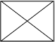

<ion-header>
    <ion-toolbar>
        <ion-title>Revelar momentos</ion-title>
        <ion-buttons slot="start">
            <ion-back-button></ion-back-button>
        </ion-buttons>
    </ion-toolbar>
</ion-header>

<ion-content>
    
    <ion-button expand="block" class="ion-padding" style="padding-bottom: 20px;" (click)="adicionarMomento()">
        Adicionar este momentos.
    </ion-button>
    <div i.class="ion-padding">
        <ion-item-divider>
            <ion-label>
                Momentos escolhidos.
            </ion-label>
        </ion-item-divider>
    </div>

    <div class="row" class="ion-padding">
        <ion-card *ngFor="let card of cards" style="width: 28%;display: inline-block;">
            <ion-card-header style="padding:10px;">
                <ion-card-subtitle class="ion-float-right">00:10</ion-card-subtitle>
            </ion-card-header>
            <ion-card-content>
                
            </ion-card-content>
        </ion-card>
    </div>


    <ion-fab vertical="bottom" horizontal="end" slot="fixed" style="margin-bottom:3%; margin-left:13%;">
        <ion-fab-button color="light" (click)="finalizarAdicaoMomentos()">
            <ion-icon name="checkmark-outline"></ion-icon>
        </ion-fab-button>
    </ion-fab>
</ion-content>